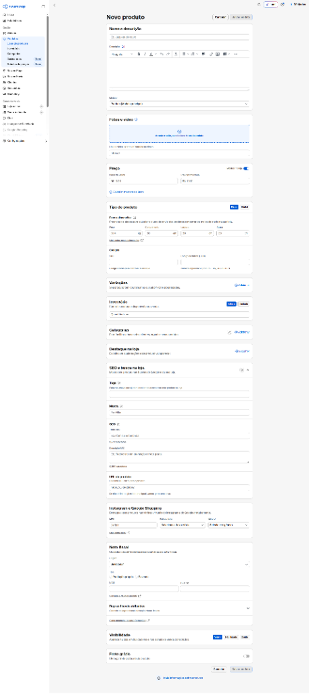

Manual de Operação da Nuvemshop: Os 3 Processos da Loja Física
Processo 1: Como Cadastrar Produtos com Foco em Vendas
O cadastro de produtos é a vitrine virtual da Rô Modas na internet. Um produto bem cadastrado responde a todas as dúvidas da cliente antes que ela precise chamar no WhatsApp e faz o anúncio aparecer nas primeiras posições de busca do Google.

Guia Campo por Campo (Conforme o Painel da Loja):
Abaixo detalhamos exatamente o que a colaboradora deve preencher em cada bloco da tela de cadastro:
| Seção do Painel | O Que Preencher | Padrão de Qualidade da Rô Modas |
|---|---|---|
| Nome e Descrição | Título SEO e Descrição completa com medidas. |
Fórmula do Título: [Peça] + [Modelagem] + [Tecido/Detalhe] — Rô Modas.Ex: Vestido Midi Canelado Manga Curta Casual — Rô Modas. Na descrição, inserir tabela em centímetros (busto, cintura, quadril) e ocasião de uso. |
| Fotos e Vídeo | Mínimo de 3 imagens claras da peça. |
Foto 1: No corpo (provador com iluminação limpa ou modelo IA); Foto 2: Detalhe bem próximo da textura do tecido, costura e botões; Foto 3: Costas e caimento traseiro. |
| Preço | Preço de venda e Preço promocional. | Trabalhar a faixa de R$ 35,00 a R$ 150,00. Em promoções, preencher o "Preço de" (ex: R$ 89,90) e o "Preço por" (ex: R$ 69,90) para o site exibir a tarja de desconto. |
| Tipo de Produto & Frete | Marcar Físico e inserir dimensões reais do pacote. |
Crucial para o cálculo do frete: Colocar o peso do pacote dobrado (ex: 0.300 kg) e as dimensões (ex: Comprimento: 25cm | Largura: 20cm | Altura: 5cm). Preencher o código interno (SKU) para identificação rápida.
|
| Variações | Tamanhos e Cores disponíveis. | Cadastrar as opções disponíveis no cabide da loja: tamanhos P, M, G, GG ou numerações do jeans (36 ao 48). |
| Inventário (Estoque) | Quantidade física exata na loja física. | Inserir apenas o número de peças que estão fisicamente disponíveis na arara da loja de Matão (ex: 2 no tamanho P, 3 no tamanho M). |
| Categorias | Selecione a categoria no menu da loja. | Marcar as categorias correspondentes: Vestidos, Calças Jeans, Blusas, Conjuntos, Calçados ou Infantil. |
| SEO e Busca na Loja | Tags, Marca e Descrição para o Google. |
Marca: Digitar sempre Rô Modas.Tags: moda feminina matão, vestido midi, jeans elastano.A URL do produto deve ser limpa e sem acentos. |
| Visibilidade | Deixar como Visível. | O produto vai ao ar imediatamente para compra no site e pode ser compartilhado no Instagram e WhatsApp. |
Processo 2: Controle de Estoque Integrado (Loja Física x Site)
Para que a mesma peça não seja vendida simultaneamente na loja de Matão e na internet, a equipe executa uma rotina simples em dois momentos do dia:
Ao abrir a loja, a colaboradora entra no aplicativo da Nuvemshop no celular. Ao constatar um pedido com status "Pagamento Confirmado", vai imediatamente à arara física da loja, retira a peça física e a coloca na bancada de expedição com uma etiqueta contendo o nome da cliente. Dessa forma, nenhuma cliente presencial corre o risco de comprar a peça que já foi reservada online.
Se durante o dia alguma peça que também estava exposta no site foi vendida presencialmente no balcão da loja física, a funcionária abre o aplicativo da Nuvemshop, pesquisa a referência da peça e dá baixa manual de 1 unidade no estoque virtual. Esse ajuste rápido leva menos de 30 segundos e garante que o estoque da internet permaneça 100% fiel à realidade da loja.
Processo 3: Impressão da Etiqueta em Folha A4 Comum (Sem Impressora Zebra)
A Rô Modas não necessita adquirir uma impressora térmica profissional (Zebra) de R$ 1.500 para despachar encomendas. Qualquer impressora de escritório comum (laser ou jato de tinta) com papel sulfite A4 convencional realiza o despacho com total validade perante os Correios e transportadoras.
- Gerar a Etiqueta em PDF: No painel da Nuvemshop (ou plataforma Melhor Envio), acesse o pedido pago e clique em "Imprimir Etiqueta". O sistema gerará um arquivo PDF contendo a etiqueta de postagem e a Declaração de Conteúdo;
- Configuração Obrigatória na Impressora: Ao abrir a janela de impressão no computador, configure a escala obrigatoriamente para "Tamanho Real" (Escala 100%). Nunca utilize "Ajustar à página" ou "Reduzir", pois a redução distorce as barras do código laser e impede a leitura do scanner dos Correios;
- Qualidade de Impressão: Selecione o modo "Padrão" ou "Alta". Evite o modo "Rascunho / Econômico" para que a tinta preta fique bem nítida;
- Recorte e Aplicação: Recorte a etiqueta na linha pontilhada. Posicione-a na parte frontal da caixa ou envelope de segurança e cubra-a inteiramente com fita adesiva transparente larga. A fita plastifica o papel, protegendo contra umidade e chuva no trajeto;
- Declaração de Conteúdo dos Correios: Assine o campo "Assinatura do Remetente" na folha de Declaração de Conteúdo, dobre-a e insira do lado de fora do pacote dentro de um saquinho plástico transparente protetor (conforme a exigência oficial dos Correios);
- O Toque Especial da Rô Modas: Dobre a peça no papel de seda, borrife a fragrância característica da loja, anexe o cartão de agradecimento com o cupom de recompra e entregue para o motoboy ou leve à agência dos Correios às 14h00.